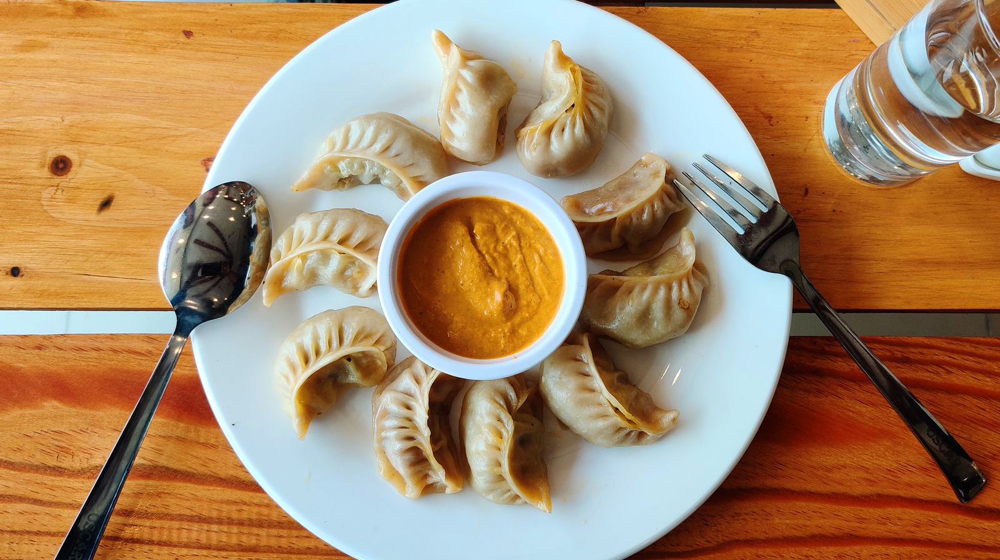

MOMO

INGRIDENTS OF MOMO
- 500 gm of minced meat
- 1 grated onion
- Some finely chopped coriander
- 2 tablespoons of ginger and garlic paste each
- Half a tablespoon of coriander powder
- Half a tablespoon of turmeric
- Half a tablespoon of cumin powder
- 2 tablespoons of grated chilli
- 2 tablespoons of vegetable oil
- 2 tablespoons of salt
- 1 kg of flour
MAKING PROCESS OF MOMO
- Preparing the fillings
- Add 1 grated onion to minced meat
- Add half a tablespoon of turmeric powder. This is to add a bit of color to the meat.
- To enhance the flavor of the filling add 2 tablespoon of salt.
- Add 2 tablespoons of grated chilli. You can add a bit more if you want the momos to be spicy.
- Add 2 tablespoons of coriander powder to make the filling taste a bit sour.
- Mix the spices with the meat.
- Add 2 tablspoon of vegetable oil and mix it again. The oil prevents the filling from getting too dry(Nepalese love momo with juicy fillings)
- Add finely chopped coriader
- Mix them well.
- Making the momo wrappers
- Put the flour into a bowl.
- Add water a little at a time to the flour to make dough
- Knead the dough for a few more minutes. This makes the dough easier to use.
- Pinch off a bit of the dough (the amoung depends on how big you want the wrapping to be)
- With a rolling pin roll the dough as thin as possible into circular shapes (don't make them too thin or too thick the size of a glass)
- Cooking the momos
- Put around one tablespoon of the filling into the centre of the wrapping.
- Pinch one edge of the wrapping to the other edge then twist it.
- Keep donig this until the filling is covered (make sure the wrapping fully covers the filling otherwise the momos may break when steamed)
- Oil the bottomof the steamer. This prevents the momos from sticking.
- Put the momos in a systematic order so that they don't touch each other.
- Steam for 20-30 minutes.